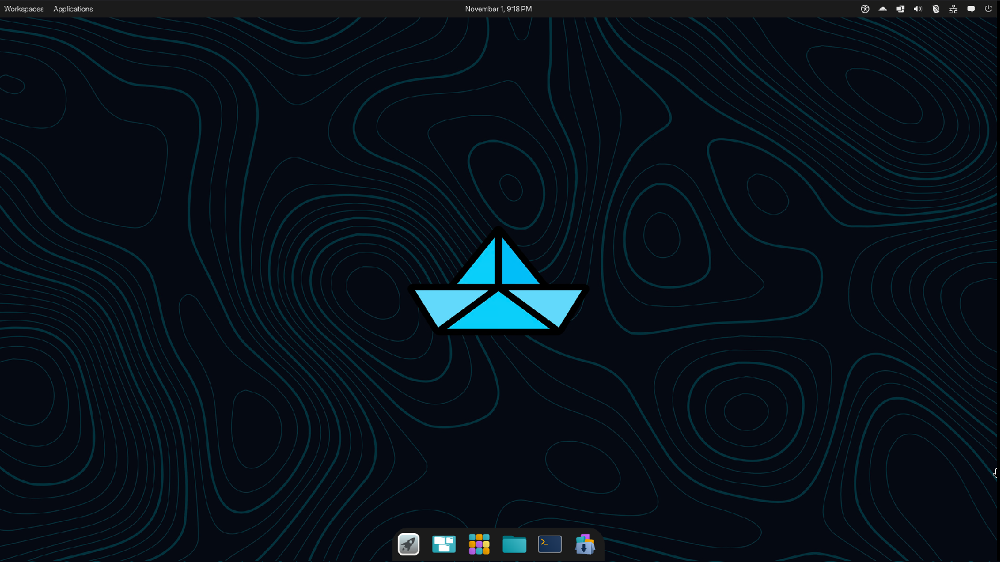

Kaizen 改善
Continuous improvement, iterative refinement.
The art of paper folding meets atomic computing.
Beautiful • Secure • Developer-Ready
Origami Linux combines Fedora Atomic's reliability with Cosmic Desktop's elegance, delivering a container-first development environment that adapts to your workflow.
Inspired by 折り紙 – the Japanese art of paper folding – Origami Linux symbolizes transformation, creativity, and simplicity. Just as a single sheet of paper can be folded into infinite forms, Origami lets you shape your system to fit your unique workflow.
Immutable OS with signed container images and atomic updates
Develop in isolated environments while keeping your host clean
Cosmic Desktop with thoughtful theming and modern aesthetics
Experimental project: expect rapid iteration. Back up your data.
Every fold serves a purpose. Every choice enhances the experience.
Built on Universal Blue's proven foundation with atomic updates, automatic rollbacks, and immutable system guarantees.
System76's next-generation desktop environment written in Rust, delivering performance and modern design philosophy.
Replace legacy tools with rust-powered alternatives: eza for ls, bat for cat, ripgrep for grep, zoxide for cd.
Distrobox integration for isolated development environments. Keep your host clean while maintaining multiple project containers.
Helix editor with LSP support out-of-the-box, plus lazygit for beautiful terminal-based Git workflows.
System-wide Inter and JetBrains Mono fonts with WhiteSur icon theme for consistent, modern visual language.
Fastfetch system info, Starship prompt, plus delightful terminal art tools like cbonsai and cmatrix for moments of zen.
Cloudflare Warp integration for secure browsing, plus aria2 and axel for accelerated downloads.
Rust-powered sudo replacement (sudo-rs), system monitoring tools, and audio visualization with cava.
"Like origami paper, every fold has intention. Every crease serves the final form. Origami Linux embraces this philosophy—each package, each configuration chosen with purpose."Learn Our Philosophy
All images are signed with Sigstore for supply-chain security.
curl -O https://raw.githubusercontent.com/john-holt4/Origami-Linux/main/cosign.pub
cosign verify --key cosign.pub ghcr.io/john-holt4/origami-linux:latestContinuous improvement, iterative refinement.
Beauty in simplicity and imperfection.
Elegance through reduction of clutter.
Naturalness without pretense – authenticity.
“A single sheet becomes a masterpiece through deliberate folds. Your system should too.”
Origami thrives on shared creativity. Report bugs, suggest features, improve docs, craft themes, or contribute code.